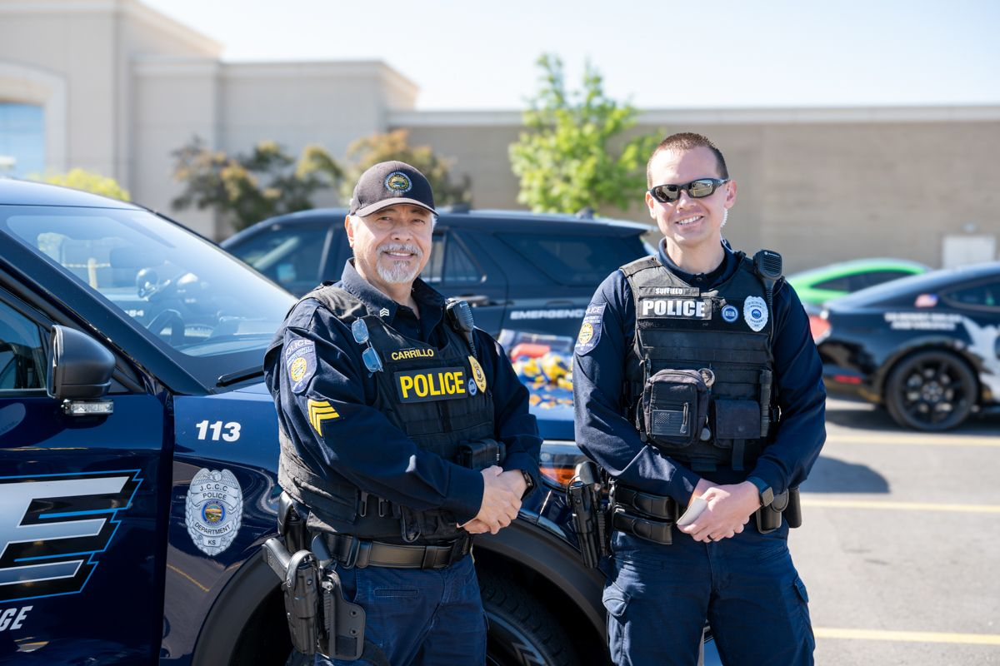

Professional Background
I have over a decade of experience in law enforcement and public safety, with a background spanning municipal departments, campus policing, and the private sector. Currently, I serve as a police officer and field training officer at Johnson County Community College, where I also serve on staff council and lead drone operations as a certified remote pilot.
Prior to my role at JCCC, I served as a police officer in Roeland Park and Marion, Kansas, and held a leadership position in asset protection at Target. My career has been shaped by a focus on community engagement, mentorship, and specialized skills such as emergency response, crisis intervention, and instructor-level certifications.
Education
- Master of Business Administration (MBA), University of St. Mary
- B.S. in Criminal Justice, Fort Hays State University
- Certificate in Marketing, Fort Hays State University
Top 10 Skills & Specialized Training
-
First-Line Leadership (FLL) - IACP
Completed leadership training through the International Association of Chiefs of Police, focused on supervision, communication, and ethical leadership in public safety. -
Field Training Officer (FTO)
Certified and experienced in onboarding and mentoring new officers through structured training programs in both campus and municipal settings. -
Business Management & Entrepreneurship
Over 15 years managing operations, marketing, and client relationships as founder of The Zepher Company. -
Crisis Intervention Team (CIT) Trained
Specialized training in mental health crisis response and de-escalation to support safe and effective community policing. -
Wicklander-Zulawski Interview & Interrogation
Trained in non-confrontational techniques to conduct ethical and effective interviews and obtain truthful disclosures. -
FAA Part 107 Certified Remote Pilot
Licensed drone operator authorized by the FAA for aerial operations in public safety, search and rescue, and event documentation. -
OC Spray Instructor
Certified instructor for law enforcement personnel in the safe use and deployment of Oleoresin Capsicum (pepper spray). -
Public Safety Instruction & Advising
Experience training officers and advising student groups like the JCCC Skeet Club to build safety awareness and engagement. -
Retail Security & Loss Prevention
Provided leadership in asset protection, guiding team performance and partnering with law enforcement to maintain a secure environment. -
Community Engagement & Outreach
Skilled at building trust and strengthening community-police relationships through proactive communication and public involvement.